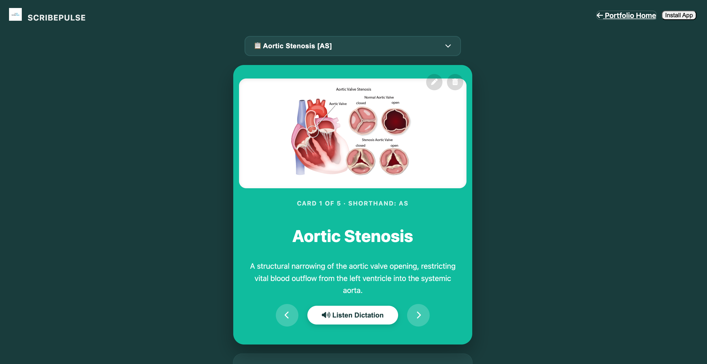
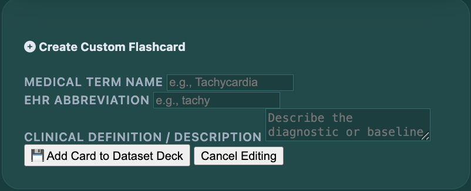
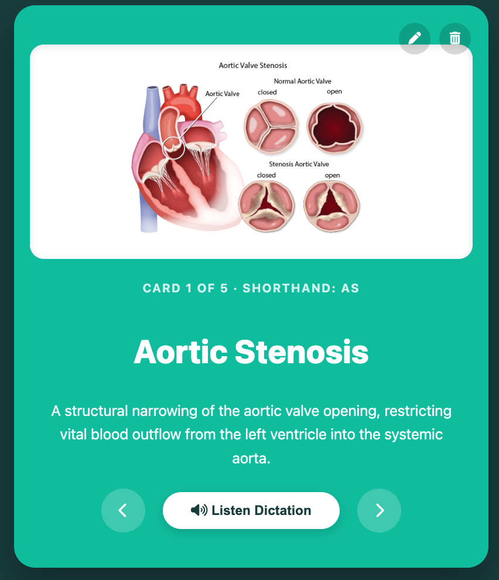

1. Application Walkthrough & Visual Tour
Review the presentation profile of the app layout setup below to see how medical terms, dynamic select fields, and creation modules compile together.

The Main Study Canvas
ScribePulse functions as an intuitive digital study deck. Users can cycle back and forth through various clinical flashcards to review foundational health concepts, medical terms, and their matching organ system diagrams.
Voice Dictation: The app will speak out loud! It reads the title of the medical card to teach you the correct pronunciation, pauses, and spells out the shorthand code.

Custom Term Creator Node
By using the creation dashboard form located directly at the bottom of the workspace, any user can seamlessly type in a new medical phrase, add its custom shorthand abbreviation, write a brief clinical description, and save it. The interface writes changes immediately straight to browser LocalStorage memory, allowing users to safely create an entirely personalized study set.

Mobile Layout Adaptation
The application layout utilizes smart, highly fluid responsive grids that dynamically shrink and rearrange elements whenever the screen becomes narrow. When loaded onto compact mobile devices, layout paddings relax, header controls stack cleanly, and card elements downscale proportionately to protect readability on smaller screens.
Save ScribePulse to Your Personal Device
Simply open the live web app link inside Google Chrome or Safari. Click the "Install App" header button up top (or select "Add to Home Screen" on your phone) to save it directly to your device layout like a native app.
2. Simple Interface & Button Guide
You do not need any coding or computer science experience to navigate this app. Here is a simple layout guide on how every clickable button operates:
| What to Click | What it Does Inside the App |
|---|---|
| Left Arrow (<) | Moves back one flashcard in the deck and plays a clean card-swapping sound effect. |
| Right Arrow (>) | Moves forward to the next flashcard in the deck and plays a clean card-swapping sound effect. |
| Listen Dictation | The app will speak out loud! It reads the title of the medical card to teach you the correct pronunciation, pauses, and spells out the shorthand code. |
| Pencil Icon | Only appears on cards you created yourself. Clicking it loads your words back down into the creation box at the bottom so you can easily edit or change them. |
| Trash Can Icon | Only appears on cards you created yourself. Clicking it permanently deletes that specific flashcard from your deck collection layout. |
Lazy Keyboard Shortcuts
If you are on a laptop or desktop computer, you don't even have to use your mouse! Just press your keyboard's Left Arrow and Right Arrow Keys, or hit your Spacebar to swap through the study cards.
3. Dataset Modification Architecture Guide
The front-end rendering environment parses all text and image structures dynamically out of a decoupled dataset file. This allows anyone to re-configure ScribePulse to teach entirely different lab works or topics by adjusting the data.json file parameters.
JSON Specification Spec Template:
To insert a custom list or topic sequence, match your structural object fields to follow this layout:
{
"appTheme": "Your Course Topic Title Context Name String",
"vocabulary": [
{
"id": "unique_item_sequence_token",
"title": "Main terminology text label printed on card header",
"abbreviation": "Spaced uppercase lettering characters to pace phonetic audio loops",
"shorthand": "Short category code snippet displayed on structural metadata line",
"description": "Comprehensive review overview block outlining definition records",
"image": "Relative image location path string (Leave blank '' for custom text cards)"
}
]
}Instructions to Update Topic Arrays:
- Move your custom graphics files straight inside your assignment directories folder paths.
- Access your project repository editor instance, load up your central
data.jsonblock, and adjust or swap the objects contained inside the array framework layer. - Open up your service worker file registry string array parameters and register the file name paths inside the cache list to allow smooth data loading when running the app fully offline.